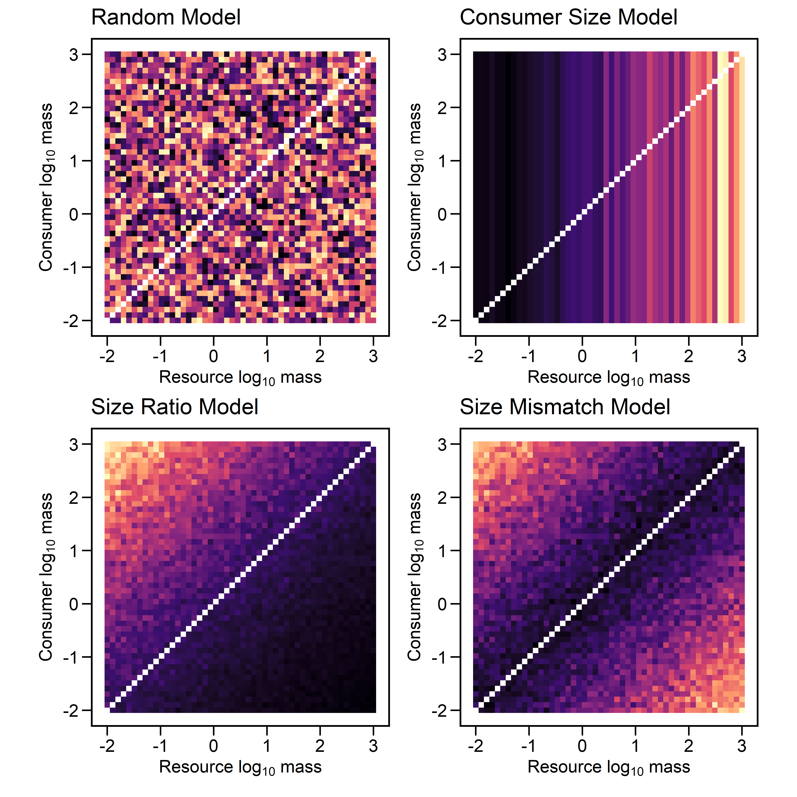

# Setup
set.seed(666)
inv_logit <- function(x) exp(x) / (1 + exp(x))
# Parameters
N = 50
mu_p = -2
sigma_p = 0.25
bM = bR = bA = 0.5
# Body mass
mass = exp(seq(log(0.01), log(1000), length.out = N))
M = log10(mass)
# Pairwise matrices
Bi = matrix(M, N, N)
Bj = t(Bi)
# Covariates
ratio = Bi - Bj
mismatch = abs(Bi - Bj)
# Noise
eps = matrix(rnorm(N*N, 0, sigma_p), N, N)
# (1) Consumer Size Model
pM = inv_logit(mu_p + bM * M + rnorm(N, 0, sigma_p))
pM_mat = matrix(pM, N, N, byrow = T)
diag(pM_mat) = NA
# (2) Size Ratio Model
pR_mat = inv_logit(mu_p + bR * ratio + eps)
diag(pR_mat) = NA
# (3) Size Mismatch Model
pA_mat = inv_logit(mu_p + bA * mismatch + eps)
diag(pA_mat) = NA
# Data for plotting
dat = data.frame(
consumer_mass = as.vector(Bi),
resource_mass = as.vector(Bj),
size_ratio = as.vector(ratio),
size_mismatch = as.vector(mismatch),
p_consumer = as.vector(pM_mat),
p_ratio = as.vector(pR_mat),
p_mismatch = as.vector(pA_mat)
)Introduction
In the previous post, we discussed how the probability of a feeding link between two species depends in part on the probability of detecting the link during the sampling effort. Accounting for this is an important step toward understanding whether the food web structure we are studying is due to ecological processes that underlie community assembly, or some sampling bias (or both).
As a reminder, our existing model treats the probability of an observed link in a web (\(A_{ij,k}\)) as
Detection Model
\[ \begin{align} A_{ij,k} &\sim \text{Bernoulli}(q_{ij,k}) \\ q_{ij,k} &= p_k \pi_{ij,k} \\ p_k &= \text{logit}^{-1}(\mu_{p} + \delta_{p,k}) \\ \pi_{ij,k} &= \text{logit}^{-1}(\alpha_k + u_{i,k} + v_{j,k}) \\ \alpha_k &= \mu_{\alpha} + \sigma_{\alpha} \alpha^{(z)}_k \\ u_{i,k} &= \sigma_u u^{(z)}_{i,k} \\ v_{j,k} &= \sigma_v v^{(z)}_{j,k} \\ p^{(z)}_k, \alpha^{(z)}_k, u^{(z)}_{i,k},v^{(z)}_{j,k} &\sim \mathcal{N}(0,1) \end{align} \]
| Notation | Meaning |
|---|---|
| \(\pi_{ij,k}\) | true ecological interaction probability |
| \(p_k\) | detection probability for web \(k\) |
| \(q_{ij,k}\) | probability of observing interaction |
| \(\alpha_k\) | baseline interaction rate in web \(k\) |
| \(u_{i,k}\) | consumer \(i\) feeding generality |
| \(v_{j,k}\) | resource \(j\) feeding vulnerability |
| \(\mu_p\) | overall mean detection |
| \(\sigma_p\) | between-web variation in detection |
| \(\mu_{\alpha}\) | overall mean interaction rate |
| \(\sigma_{\alpha}\) | between-web variation in interaction rate |
| \(*^{(z)}\) | standardized, non-centered latent deviations |
Though this is an important advance, our detection probability is just another probability that we estimate. It is treated as a latent, random effect that accounts for false negatives. However, it reasonable to assume that detection could be non-random: some species with particular traits may be more likely to observed. For example, the diets of larger species may be easier to detect. To incorporate this, we make an adjustment to Equation 3. We have a few options here. First, let \(M_i\) and \(M_j\) be the log body masses of consumer \(i\) and resource \(j\).
Consumer Size Model
We define a parameter \(\beta_M\) which controls the effect of consumer body mass on detection.
\[ \begin{align} \text{logit}(p_{i,k}) = \mu_p + \beta_M M_i + \sigma_p p^{(z)}_{i,k} \end{align} \]
When \(\beta_M > 0\), the feeding links of larger species are detected more often.
Size Ratio Model
An second approach could hypothesize that it is the ratio of \(M_i\) to \(M_j\) that influences detection. Since both covariates are on a log scale, we compute the difference between them and estimate the effect \(\beta_R\).
\[ \begin{align} \text{logit}(p_{ij,k}) &= \mu_p + \beta_R (M_i - M_j) + \sigma_p p^{(z)}_{ij,k} \end{align} \]
Size Mismatch Model
A third option would be to focus on the absolute difference between the species body sizes. This means something quite difference biologically.
\[ \begin{align} \text{logit}(p_{ij,k}) &= \mu_p + \beta_A |M_i - M_j| + \sigma_p p^{(z)}_{ij,k} \end{align} \]
Each of the detection mechanisms contain very different assumptions about how detection scales body size.
- Consumer Size Model: This individual-level mechanism suggests that probability scales with the body size of the consumer, regardless of the size of the prey. Large predators are easier to observe and thus their feeding links are easier to detect.
- Size Ratio Model: This edge-level mechanisms suggests that the probability of observing a feeding link depends on the ratio of consumer to resource body size. Observing large predators feeding on smaller prey are more likely, whereas a predator which is much smaller than it prey are ecological unusual and difficult to detect. The detection probability of such unusual events is proportionally lower.
- Size Mismatch Model: This edge-level mechanism assumes that detection probability depends on the absolute difference between predators and prey. This mechanism does not imply that size mismatches are uncommon, only that such interactions leave evidence that is more difficult to detect.
To further investigate these mechanisms, we can simulate their effect on detection probability.
First, we can consider the matrices produced by these models. Each cell contains the probability of detecting an interaction between the two species.
order_idx = order(M)
par(mfrow=c(1,3), mar=c(3,1,3,1))
image(pM_mat[order_idx, order_idx],
main='Consumer Size Model',
xlab='Resource', ylab='Consumer',
axes=F)
image(pR_mat[order_idx, order_idx],
main='Size Ratio Model',
xlab='Resource', ylab='',
axes=F)
image(pA_mat[order_idx, order_idx],
main='Size Mismatch Model',
xlab='Resource', ylab='',
axes=F)